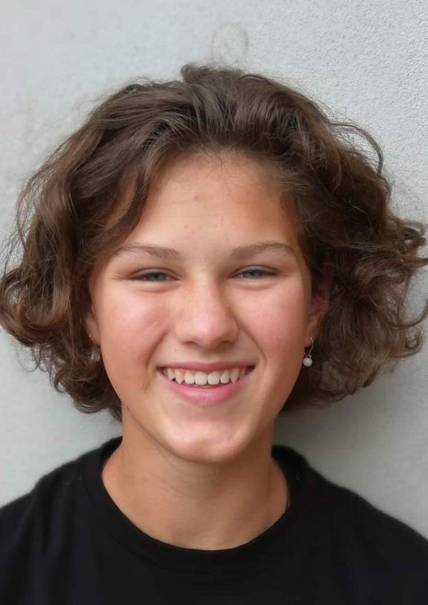

Můj Životopis

Jméno
Julie Desová
Věk
skoro 17 let
Vzdělání
Základní škola Říčany u Brna
Základní škola Ostrovačice
Gymnázium T. G. Masaryka v Zastávce
Koníčky
- Chození do divadla
- Čtení
- Poslouchání hudby
- Sledování filmů
zkouška
Odkazy na sociální sítě
Facebook
LinkedIn